Misc Lab 1¶
Task 1 — Calculator¶
-
文件分析
- (.lua是一种轻量级，嵌入式的脚本语言)
- 观察文件可以发现有一些空行，用
cat -A命令可以查看（cat -A会在段尾加$，Tab 会显示为^I） - 说明本题在正常的 Lua 计算器代码末尾，用空格和 Tab 拼出了 flag 的二进制编码（空格代表 0，Tab 代表 1）
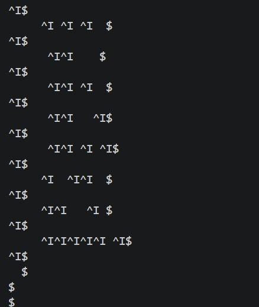
-
脚本撰写
- 用二进制模式“rb”读取，可以用来保留所有原始字节
- 观察上一张 cat -A 的结果可以发现是每隔一行有一行有效输入
- 表示为二进制再转成十进制，用ASCII码转化就可以得到具体的flag了
- 具体的代码实现可以看 py 代码里的注释
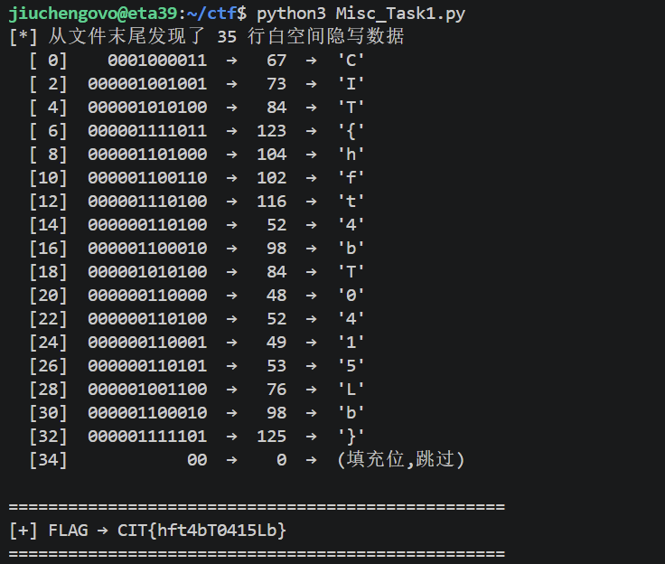
Task 2 — Fixpoint¶
Base64 编码原理应该不用再写了吧…… lab0写过了qwq
-
前置知识
- 首先可以观察到一个现象：对某个字符串反复进行 Base64 编码时，越前面的字符会越先稳定（如
Vm0wd2QyUXlVWGxWV0d4V1YwZDRWMVl3WkR……） - 原理很简单，分析第一个字符
V：Base64 编码将输入字符串转为二进制（0-255），然后除以 4 按照 Base64 映射表获得新字符 V的 ASCII 码值是 86，86 / 4 = 21，而 21 对应的 Base64 映射也是V！所以一旦到V，就永远被锁死了- 根据数学归纳法可知后面字符也会逐渐锁死
- 首先可以观察到一个现象：对某个字符串反复进行 Base64 编码时，越前面的字符会越先稳定（如
-
解题思路
- 给了我们一个 1000 字符的稳定前缀，可以确定由其中的前 750 字符 Base64 编码而来（使用自定义映射）
- 在 750 个输入字节中取 250 组，拆成 4 个 6-bit 索引，这些索引就是映射表的索引
- 示例：
Nsl → 78 115 108 → 01001110 01110011 01101100 → 010011 100111 001101 101100 → 19 39 13 44 → NslS（箭头就是映射！） - 最后插入题目提示
FiXed p01nT即可
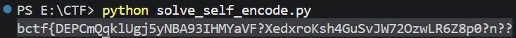
Task 3 — Slow Login¶
-
自动化攻击脚本（从端口依次递增判断）
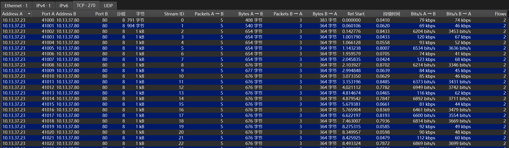
-
正常 & 异常的请求
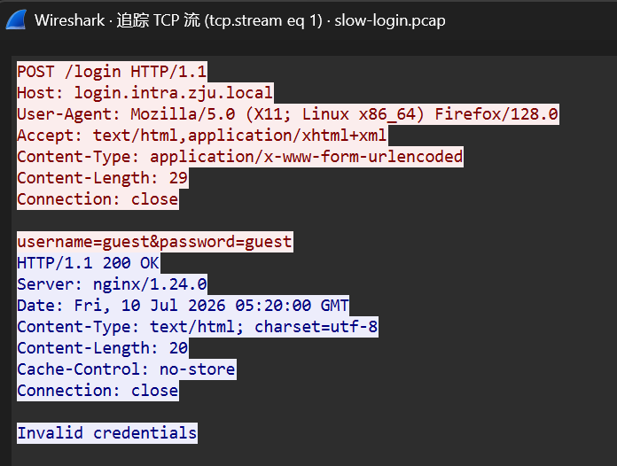
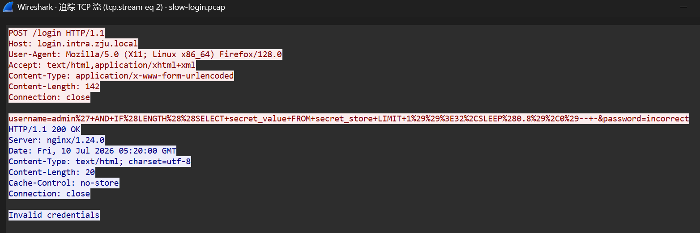
-
基于时间的盲注 SQL 注入（Web lab 1 有做过）：
username=admin' AND IF(LENGTH((SELECT secret_value FROM secret_store LIMIT 1))>32, SLEEP(0.8), 0)-- - -
过滤器设置：
http and frame.time_delta > 0.7会显示延迟超过 0.7 秒的 HTTP 包（SLEEP 触发的请求），说明条件被满足 - 如果
http and frame.time_delta < 0.7则说明条件未被满足
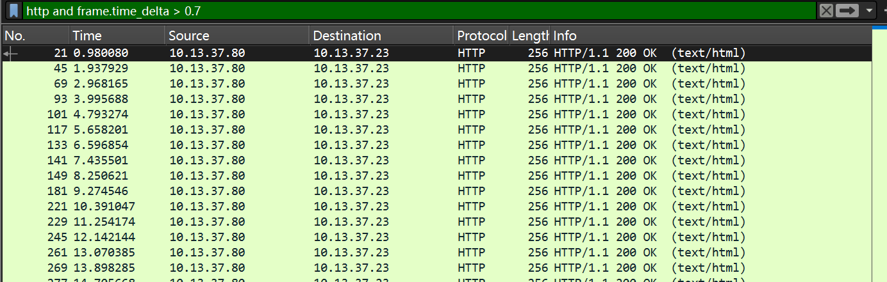
-
-
请求分析
- 随便点开一个包，URL 解码后得到：
username=admin' AND IF(ASCII(SUBSTRING((SELECT secret_value FROM secret_store LIMIT 1),4,1))>66, SLEEP(0.8), 0)-- - - 即判断第四个字符的 ASCII 码值是否大于 66，条件为真则延迟 > 0.7s
- 随便点开一个包，URL 解码后得到：
-
解题方法
- PCAP 解析 → HTTP 请求/响应配对 → 提取 SQL 注入条件 & 计算延迟 → 二分查找恢复 Flag
这道题的代码自己实在写不出来，借助了 AI（大部分） 我太菜了 TwT
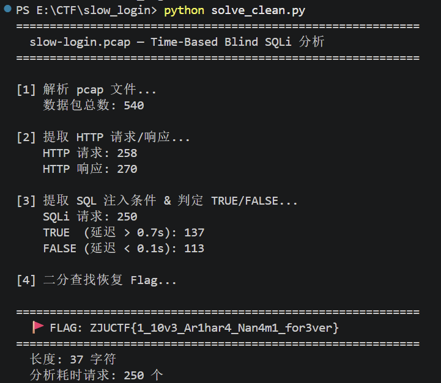
Task 4 — Live and Let Die¶
4.1 前置知识¶
-
ICMP（Internet Control Message Protocol，互联网控制报文协议）
- TCP/IP 协议栈中的网络层协议，主要用于网络设备之间传递诊断和控制信息
- 不像 TCP/UDP 那样传输应用数据，而是报告网络状态（ping 命令就是典型的 ICMP 应用）
- 主要功能：确认 IP 包是否成功到达目标地址，以及通知发送过程中 IP 包被丢弃的原因
-
ICMP 报文格式
- ICMP 报文包含在 IP 数据报中，IP 报头在 ICMP 报文的最前面
- 一个 ICMP 报文包括：IP 报头（至少 20 字节）、ICMP 报头（至少 8 字节）和 ICMP 报文数据部分
- 当 IP 报头中的协议字段值为 1 时，说明这是一个 ICMP 报文
-
TTL（Time To Live）
- 用于限制 IP 数据包在网络中存在时间的字段，防止数据包无限循环
- IPv4 报头中的 8 位字段，位于第 9 个字节，最大值 255，推荐值 64
- 每经过一个路由器 TTL 减 1，减到 0 时路由器丢弃数据包并发送 ICMP 超时消息
4.2 解题流程¶
-
将 pcap 文件放进 Wireshark，发现全都是 ICMP，打开 Internet Control Message Protocol 首选项
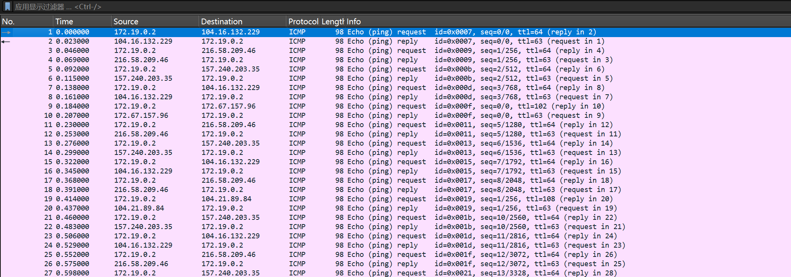
-
可以发现部分 TTL 是异常的（不是 63 或 64），使用
icmp.type == 8 and ip.ttl != 64过滤出携带信息的 TTL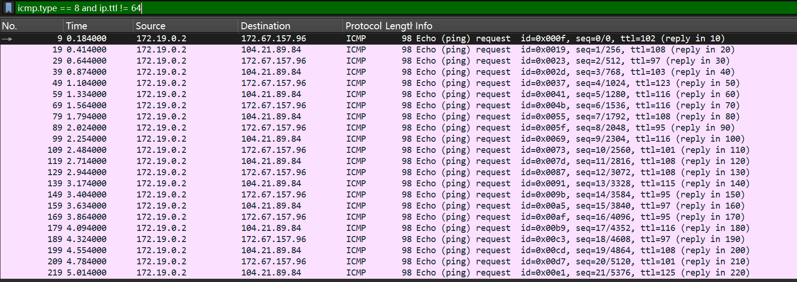
-
对 TTL 数值进行 ASCII 转码即可得到最终的 flag！
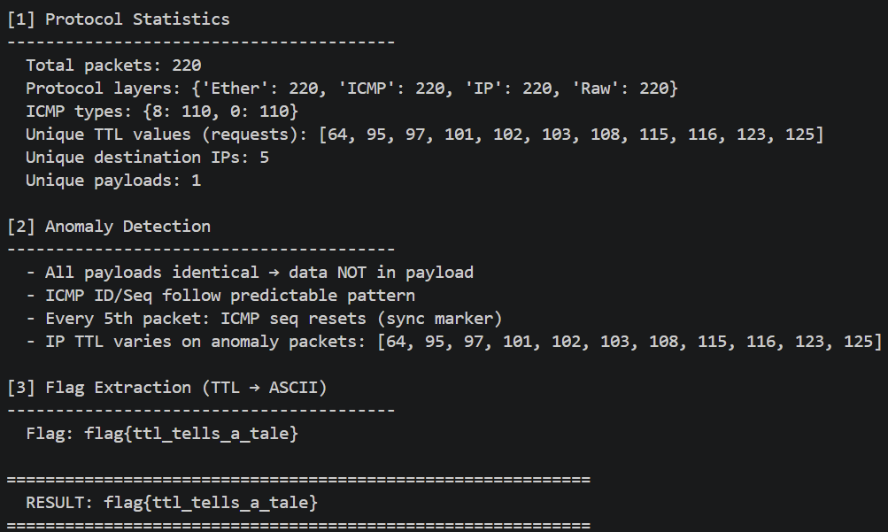
依旧用 AI 协助完成了本题代码…… 但是其实这道题直接自己硬看也不是很困难 ww